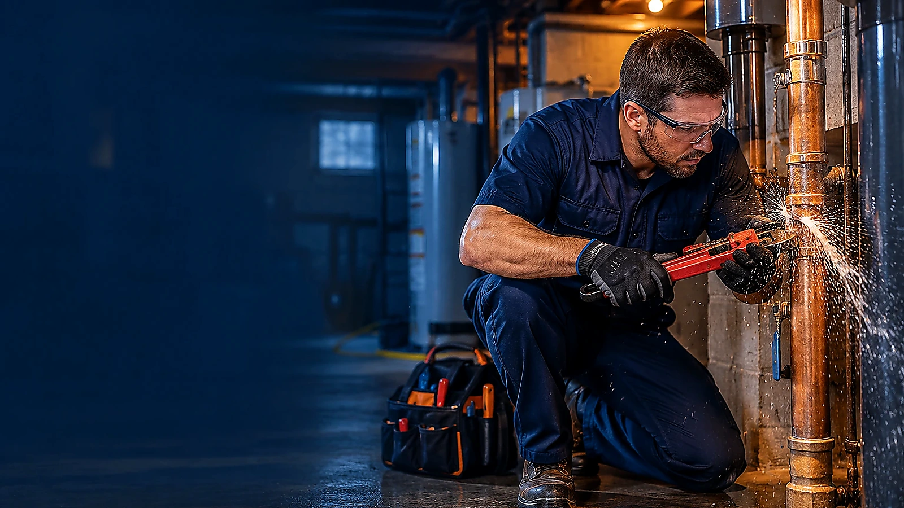
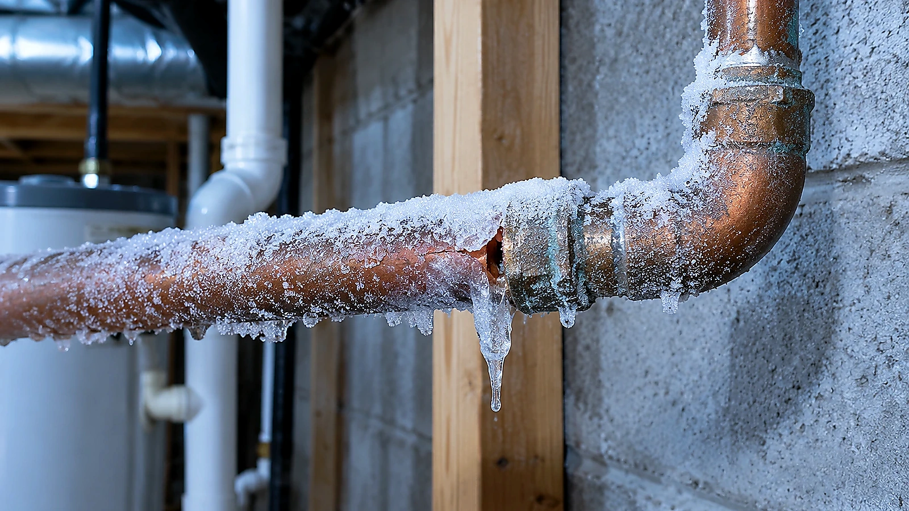
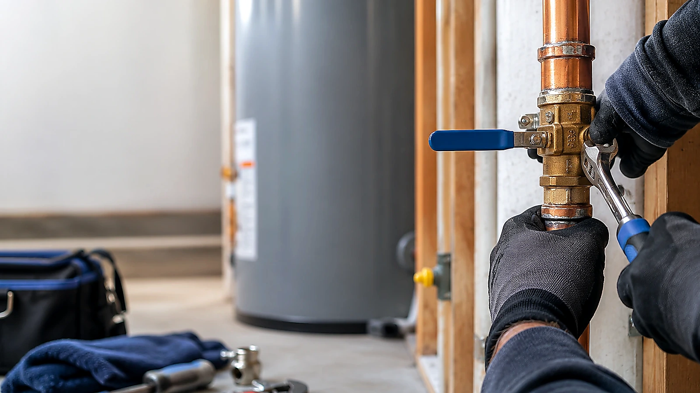
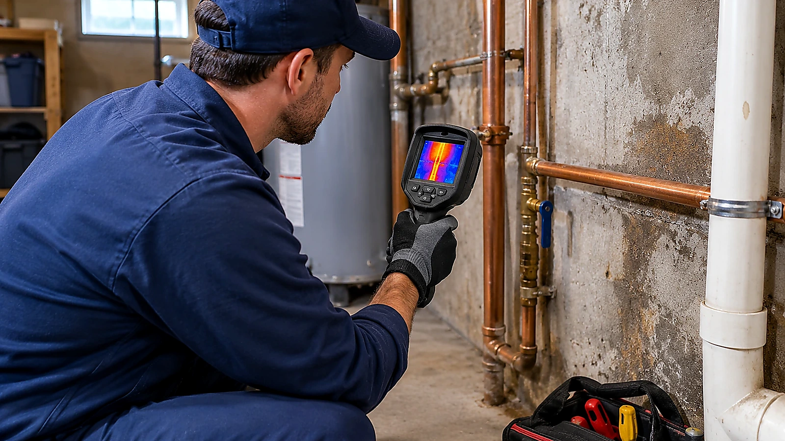
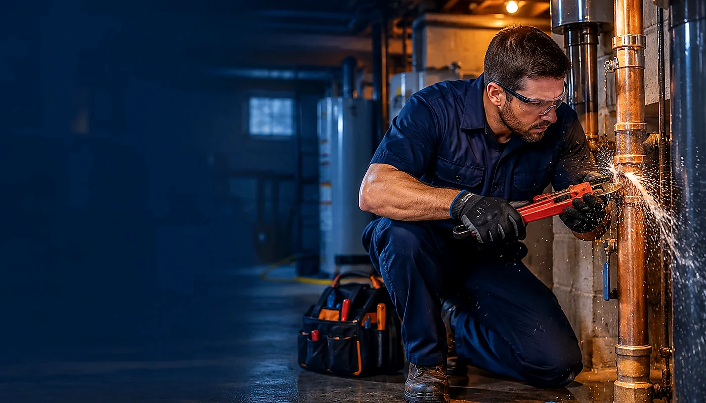
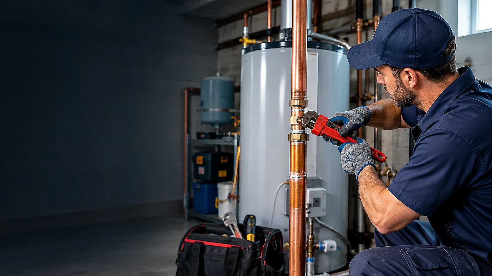
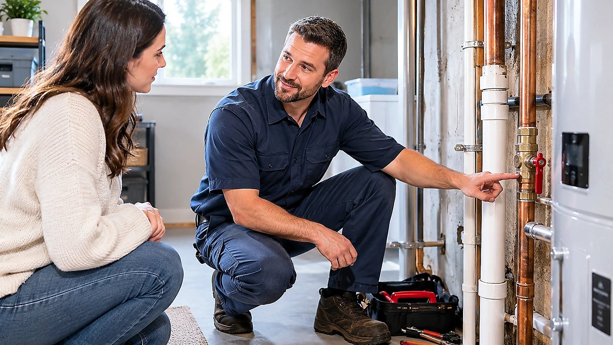

Burst Pipe Repair
Fast next-step guidance when a pipe bursts in Buffalo Grove, IL. We help connect homeowners with independent local plumbing professionals.
Learn about burst pipe repair →Explore common pipe problems and learn what to discuss with an independent local professional.

Fast next-step guidance when a pipe bursts in Buffalo Grove, IL. We help connect homeowners with independent local plumbing professionals.
Learn about burst pipe repair →
Learn what to do when pipes freeze and how local plumbing professionals can help reduce the risk of a split pipe.
Learn about frozen pipe repair →
Guidance for identifying visible pipe leaks and finding an appropriate local plumbing professional in Buffalo Grove and nearby suburbs.
Learn about pipe leak repair →
Understand common signs of a possible slab leak and the questions to ask before arranging a professional inspection.
Learn about slab leak repair →
Find guidance for urgent plumbing problems and learn how to contact a local independent plumbing professional.
Learn about emergency plumbing help →
Compare common reasons pipes may need repair or replacement and prepare for a professional assessment.
Learn about pipe repair and replacement →
Learn when shutting off the main water supply may help limit damage and what to do next.
Learn about main water shutoff help →
Understand practical first steps after a plumbing leak and when cleanup or restoration specialists may be needed.
Learn about water damage cleanup guidance →When a pipe problem appears, it can be hard to know what matters first. Use these steps to prepare and ask the right questions.
This website is a referral service, not a plumbing contractor. Independent providers determine their own availability, credentials, pricing and work. Provider response times and outcomes can vary.
For an active emergency involving personal safety, electrical hazards or structural danger, move to a safe place and contact the appropriate emergency service.
Read: what to do when a pipe bursts →Browse local information pages for Buffalo Grove and surrounding suburbs.

Pipe repair guidance and next steps for residents in Buffalo Grove, IL.
View area information →
Pipe repair guidance and next steps for residents in Wheeling, IL.
View area information →
Pipe repair guidance and next steps for residents in Arlington Heights, IL.
View area information →
Pipe repair guidance and next steps for residents in Lincolnshire, IL.
View area information →
Pipe repair guidance and next steps for residents in Vernon Hills, IL.
View area information →
Pipe repair guidance and next steps for residents in Long Grove, IL.
View area information →
Pipe repair guidance and next steps for residents in Riverwoods, IL.
View area information →Prepare for cold weather, understand warning signs and know what to ask before work begins.
A burst pipe can be stressful. These practical first steps can help you protect people and reduce additional water damage while arranging professional assistance.
Read article →Slab leaks can be difficult to identify because supply or drain lines may run beneath a concrete floor. These signs can have other causes, so inspection matters.
Read article →Knowing where the main water shutoff is before an emergency can save time. Valve locations vary by home and plumbing layout.
Read article →Use the form as a draft inquiry. Before publishing the site, connect the form to a real email or form service and add accurate business contact details.
Do not include payment details or other sensitive personal information in this sample form.